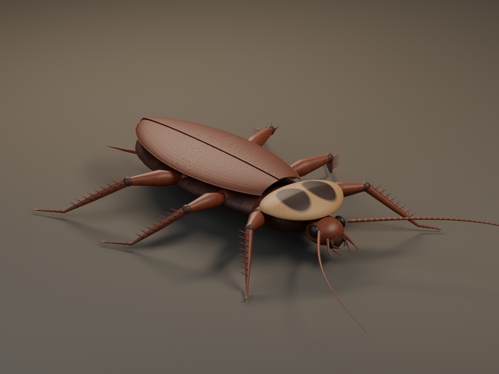
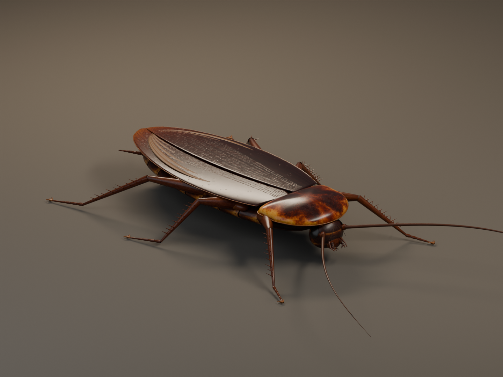
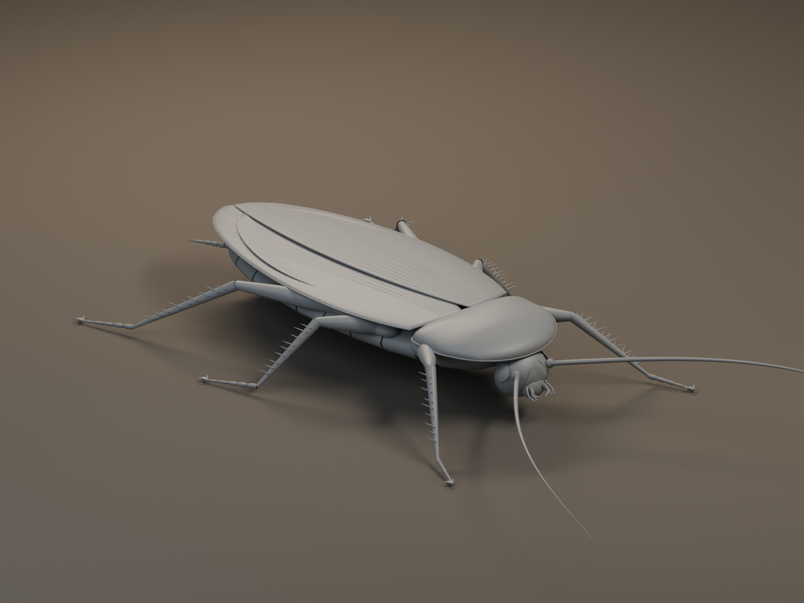
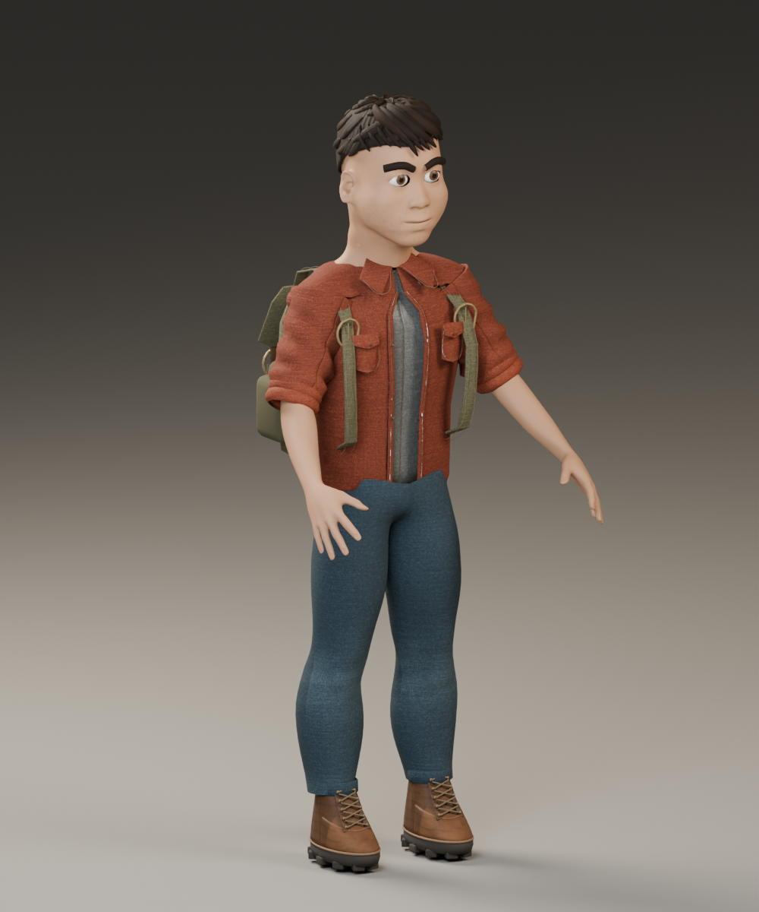
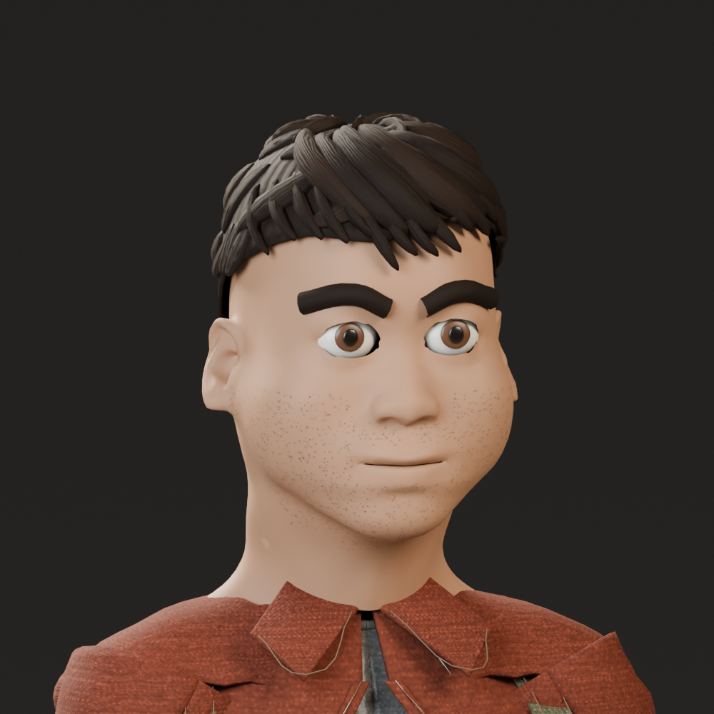
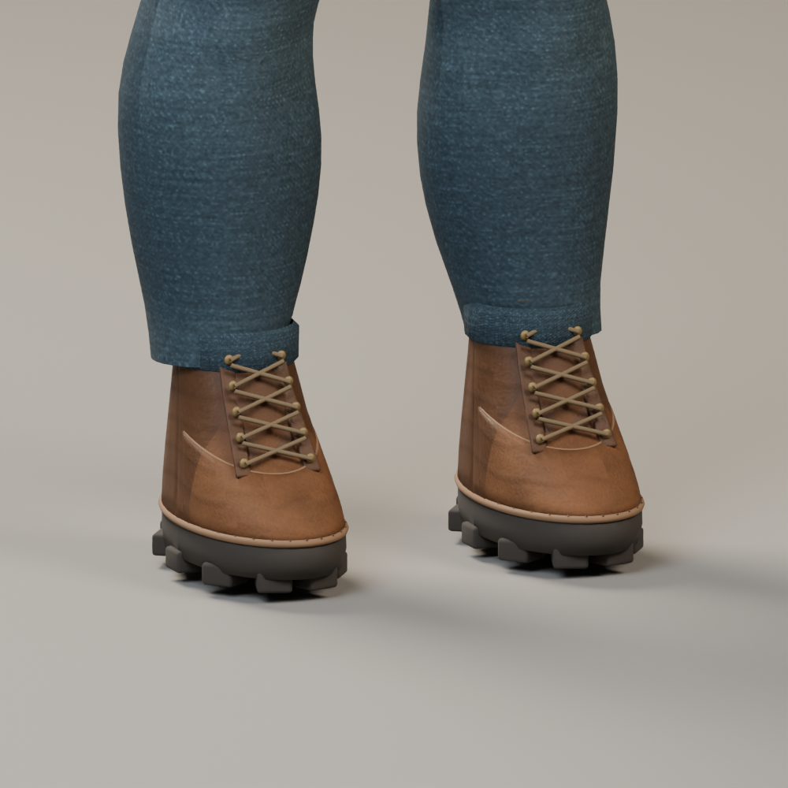
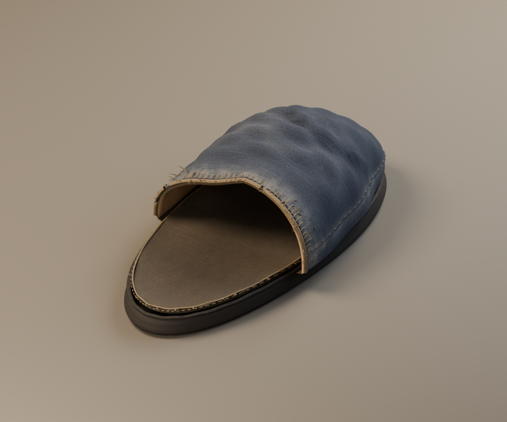
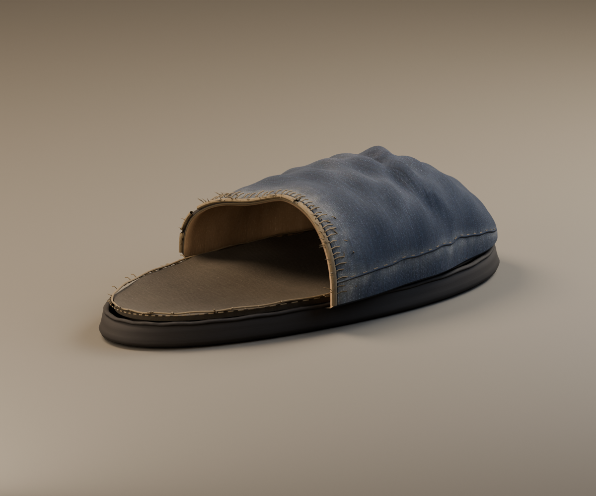
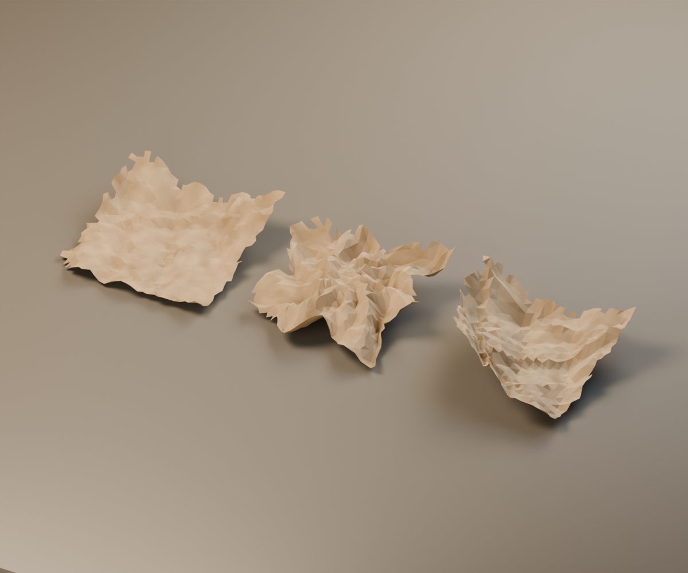

ASSET REVIEW / 形体、结构、表面
先把结构做对，再看质感。
这轮重新检查了蟑螂的背板、翅层、足节和头部，也重做了主角服装结构、靴子、拖鞋与纸团。下面展示实际游戏网格的导出结果，可点开图片看原尺寸。
图片和动作视频均为 Blender 离线渲染，不是网页实机截图。当前检查浏览器不支持 WebGL 2；手机画面、帧率及与确认稿的最终一致性仍未验证。美术基准保持不变。网页导入另有贴图压缩与缩放预算，离线近景保留源贴图。
01 · 相同灯光下的前后对照
{kind=link}

{kind=link}

02 · 把形体和贴图区分开检查


03 · 主角：衣服、背包、靴子分别制作

{kind=link}

{kind=link}

{kind=link}

04 · 材质依附于真实结构
{kind=link}

{kind=link}


纹理与质感如何制作
| 层次 | 本轮如何处理 | 验收依据 |
|---|---|---|
| 形体与结构 | 按甲片、翅层、足节、衣片、鞋楦建模 | 灰模、剪影、近景与侧视 |
| 颜色 | 色素图分区；织物使用 CC0 扫描 | 斑纹位置、布料色差、自然磨损 |
| 凹凸细节 | 从实际高精度源几何烘焙切线法线；织物使用扫描法线 | 侧光下无假褶皱、接缝和串投影 |
| 反光与粗糙度 | 与颜色独立控制，区分硬甲壳、薄翅、布和皮革 | 同一灯光下是否呈现各自的材质 |
| 战斗部位 | 六足、左右翅组、眼部保持独立网格及骨骼权重 | 命中、动画和带贴图的断肢快照验证 |
来源与制作边界
蟑螂几何为本项目重建，参考 Alex Wild / Insects Unlocked 的 CC0 实物宏观照片。色素图使用生成图片，仅作为颜色来源，不能替代网格与真实烘焙。主角以 MakeHuman CC0 人体为基础，服装和装备另行制作。原始来源、制作脚本、高精度源文件和许可记录均已保留。
- Alex Wild · 美洲大蠊背面参考 · CC0
- Alex Wild · 美洲大蠊侧面参考 · CC0
- Poly Haven · Denim Fabric 06 · Greg Zaal / Rico Cilliers · CC0
- Poly Haven · Cardboard Box 01 · Rahul Chaudhary · CC0
.jpg){kind=link}
.jpg){kind=link}
本轮修复具体的形体、材质和导出缺陷；不以面数或烘焙成功宣称达到照片级一致性。人物神态、发丝层次以及完整房间的实机光照仍需要对照确认稿验收。